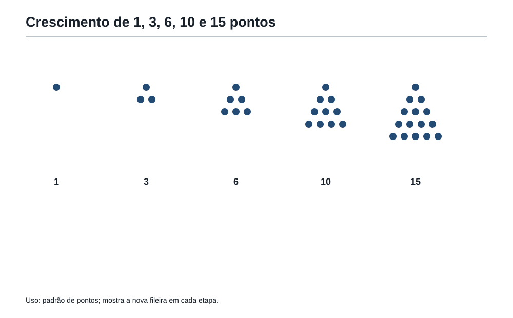
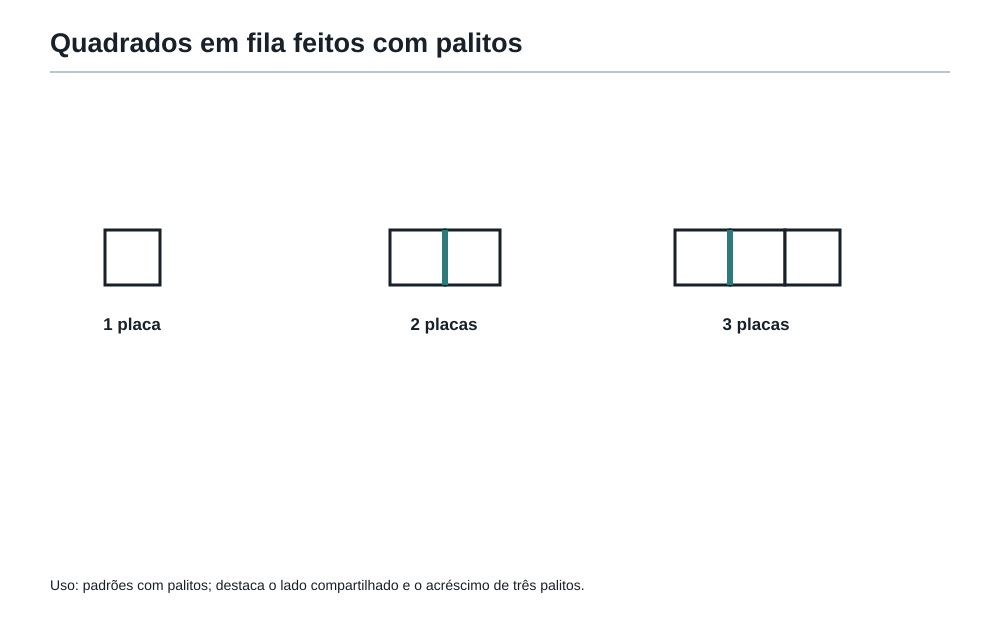
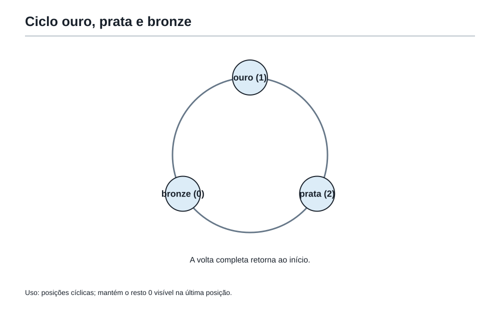
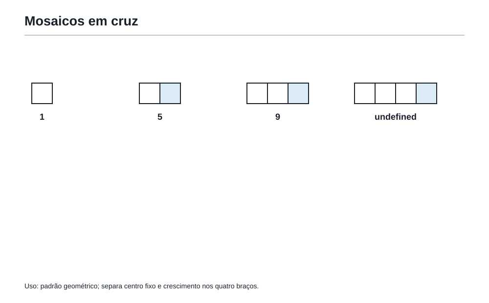
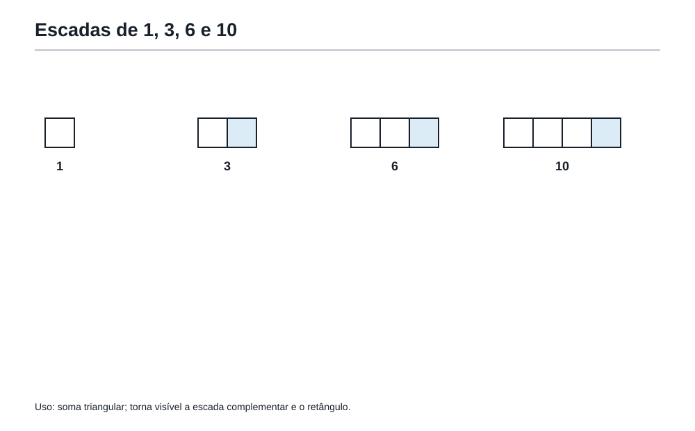

A regra secreta
1. Depois das frações e das proporções
No capítulo anterior, Felipe aprendeu que uma quantidade pode ter vários nomes: 1/2, 2/4, 3/6; uma receita pode dobrar sem mudar de sabor; um mapa pode reduzir distâncias sem destruir relações.
Agora aparece outra ideia: uma quantidade pode crescer seguindo uma regra.
Veja esta fila:
3, 6, 9, 12, 15, ...
É natural imaginar que o próximo número seja 18. Mas o ponto importante não é apenas acertar o próximo número. O ponto importante é explicar por quê.
A sequência parece andar de 3 em 3.
Agora veja outra:
2, 4, 8, 16, 32, ...
Aqui o próximo número não nasce somando sempre a mesma quantidade. Ele nasce dobrando.
E esta?
1, 4, 9, 16, 25, ...
A diferença entre os termos não é constante:
- de 1 para 4, aumenta 3;
- de 4 para 9, aumenta 5;
- de 9 para 16, aumenta 7;
- de 16 para 25, aumenta 9.
Mesmo assim há uma regra. São quadrados perfeitos:
1 × 1, 2 × 2, 3 × 3, 4 × 4, 5 × 5.
A primeira lição da sala dos padrões é esta:
Nem toda sequência cresce por soma constante. Diferença ajuda, mas não manda sozinha.
2. Sequência é uma fila com sentido
Uma sequência é uma fila de termos em que a ordem importa.
Na fila
5, 8, 11, 14, 17, ...
o número 5 é o primeiro termo. O número 8 é o segundo termo. O número 11 é o terceiro termo.
Cada termo tem duas informações:
- a posição que ele ocupa na fila;
- o valor que aparece naquela posição.
A posição responde à pergunta:
Em que lugar da fila estamos?
O valor responde à pergunta:
Que número aparece naquele lugar?
Isso parece simples, mas muitos erros em problemas de sequência nascem justamente da confusão entre posição e valor.
Na sequência 5, 8, 11, 14, 17, ..., o 5º termo é 17.
Mas a posição 17 não tem valor 17. A posição 17 é muito mais adiante na fila.
Vamos organizar:
| Posição | 1 | 2 | 3 | 4 | 5 |
|---|---|---|---|---|---|
| Valor | 5 | 8 | 11 | 14 | 17 |
A tabela deixa visível o que a pressa mistura.
A posição anda de 1 em 1. O valor anda de 3 em 3.
3. A primeira pista: olhar o que muda
O Professor escreveu no quadro:
7, 12, 17, 22, 27, ...
— Antes de tentar achar uma fórmula, diga o que muda.
Felipe observou:
- de 7 para 12, aumenta 5;
- de 12 para 17, aumenta 5;
- de 17 para 22, aumenta 5;
- de 22 para 27, aumenta 5.
A regra parece ser: começar em 7 e somar 5 a cada passo.
Então o próximo termo é 32.
Mas a Academia não se contenta com “parece”. Ela pergunta:
A regra explica todos os termos mostrados?
Sim.
E mais:
A regra permite continuar sem desenhar a fila inteira?
Também sim.
Para achar o 20º termo, não é preciso escrever todos os termos até o vigésimo. A primeira posição já tem valor 7. Para chegar à 20ª posição, damos 19 passos. Cada passo aumenta 5.
Então:
7 + 19 × 5 = 7 + 95 = 102.
O 20º termo é 102.
Perceba o cuidado: da 1ª posição até a 20ª posição não há 20 saltos. Há 19 saltos.
Essa é uma armadilha clássica.
4. Quando a diferença constante abre o caminho
Sequências com diferença constante aparecem muito em problemas olímpicos.
Exemplo:
4, 10, 16, 22, 28, ...
A diferença é sempre 6.
A ideia nasce assim:
- primeiro termo:
4; - cada nova posição acrescenta
6; - posição 1 não precisa de nenhum salto;
- posição 2 precisa de 1 salto;
- posição 3 precisa de 2 saltos;
- posição 10 precisa de 9 saltos.
Então o 10º termo é:
4 + 9 × 6 = 58.
A letra pode aparecer depois, sem susto.
Se a posição é n, então o número de saltos a partir do primeiro termo é n - 1.
Por isso o termo da posição n pode ser pensado como:
primeiro termo + (n - 1) × passo.
Mas a Academia não quer que Felipe decore isso como uma frase vazia. A imagem mental é mais importante:
Para chegar à posição
n, saímos da posição 1 e damosn - 1passos.
5. Diferença ajuda, mas nem sempre resolve
A coruja escreveu outra sequência:
1, 3, 6, 10, 15, ...
Felipe olhou as diferenças:
- de 1 para 3, aumenta 2;
- de 3 para 6, aumenta 3;
- de 6 para 10, aumenta 4;
- de 10 para 15, aumenta 5.
A diferença não é constante. Ela cresce de 1 em 1.
Isso não significa que a sequência não tenha regra. Pelo contrário: a regra apareceu.
Cada termo acrescenta o próximo número natural:
1
1 + 2 = 3
1 + 2 + 3 = 6
1 + 2 + 3 + 4 = 10
1 + 2 + 3 + 4 + 5 = 15
São números que formam triângulos de pontos.

A sequência tem uma regra visual: cada nova figura acrescenta uma fileira maior.
A diferença não resolveu sozinha, mas mostrou o caminho.
6. Termo, posição e tabela
Quando a sequência fica visual, a tabela vira uma lanterna.
Imagine figuras feitas com pontos:
- Figura 1: 1 ponto.
- Figura 2: 3 pontos.
- Figura 3: 6 pontos.
- Figura 4: 10 pontos.
- Figura 5: 15 pontos.
A tabela separa posição e valor:
| Figura | 1 | 2 | 3 | 4 | 5 |
|---|---|---|---|---|---|
| Pontos | 1 | 3 | 6 | 10 | 15 |
| Aumento | — | +2 | +3 | +4 | +5 |
Agora a pergunta pode mudar.
Se o problema pergunta “quantos pontos há na Figura 10?”, ele quer um termo específico.
Se pergunta “quantos pontos foram usados ao todo da Figura 1 até a Figura 10?”, ele quer uma soma acumulada.
Essas duas perguntas não são iguais.
Termo específico:
Quanto aparece em uma posição?
Total acumulado:
Quanto aparece somando várias posições?
A Mochila ganha aqui uma ferramenta importantíssima:
Distinguir termo pedido e total acumulado.
7. Generalizar sem assustar
A palavra “generalizar” pode parecer grande. Na Academia, ela tem um significado simples:
Encontrar uma regra que funcione não só para os primeiros casos, mas para qualquer posição.
Se uma fila começa assim:
6, 11, 16, 21, ...
podemos continuar alguns termos. Mas isso ainda é pouco.
O matemático olímpico quer responder perguntas maiores:
- Qual é o 50º termo?
- Existe algum termo igual a 1001?
- Em que posição aparece o número 126?
Para isso, precisamos enxergar a estrutura.
Na sequência 6, 11, 16, 21, ..., o primeiro termo é 6 e o passo é 5.
Na posição n, saímos do 6 e damos n - 1 passos de 5.
Então o valor é:
6 + 5 × (n - 1).
Agora podemos perguntar: o número 126 aparece nessa sequência?
Se aparece, então:
6 + 5 × (n - 1) = 126.
Isso significa:
5 × (n - 1) = 120.
Logo:
n - 1 = 24.
Então n = 25.
O número 126 aparece na 25ª posição.
Perceba: a letra n não apareceu para assustar. Ela apareceu para representar uma posição qualquer.
8. O padrão dos palitos
O Professor colocou sobre a mesa alguns palitos e montou quadrados em fila.
Um quadrado isolado usa 4 palitos.
Dois quadrados grudados lado a lado não usam 8 palitos. Eles usam 7, porque compartilham um lado.
Três quadrados em fila usam 10 palitos.
A tabela fica assim:
| Quadrados em fila | 1 | 2 | 3 | 4 | 5 |
|---|---|---|---|---|---|
| Palitos | 4 | 7 | 10 | 13 | 16 |
O aumento é sempre 3.
Por quê?
Porque o primeiro quadrado usa 4 palitos. Cada novo quadrado grudado aproveita um lado já existente e acrescenta apenas 3 palitos.

Então, para n quadrados em fila:
- o primeiro quadrado usa 4 palitos;
- os outros
n - 1quadrados acrescentam 3 palitos cada.
Total:
4 + 3 × (n - 1).
Outra forma de ver:
3n + 1.
Mas a forma mais importante é a primeira, porque conta a história:
Primeiro quadrado completo; depois, cada quadrado novo acrescenta três lados.
A fórmula não deve esconder a ideia.
9. O perigo de continuar sem pensar
Continuar uma sequência é útil, mas pode enganar.
Veja:
2, 4, 6, 8, ...
A resposta mais natural para o próximo termo é 10. Mas, só com quatro termos, outras regras estranhas também poderiam gerar os mesmos primeiros números e mudar depois.
Em problemas olímpicos bem escritos, o desenho, a história ou a construção deixa a regra clara.
Se o enunciado diz:
A sequência é formada somando 2 a cada termo.
não há dúvida.
Se o enunciado mostra figuras crescendo por uma construção, a regra precisa nascer da figura.
O erro é olhar apenas os números e ignorar a construção.
A coruja repetiu:
— Padrão verdadeiro explica como a figura foi construída. Não apenas combina com os primeiros valores.
Por isso, em problemas com figuras, sempre pergunte:
- O que foi acrescentado de uma figura para a próxima?
- O que foi compartilhado?
- O que ficou igual?
- O problema pede uma figura específica ou um total acumulado?
10. Padrões que alternam
Nem todo padrão cresce. Alguns alternam.
Imagine uma sequência de medalhas na parede:
ouro, prata, bronze, ouro, prata, bronze, ouro, prata, bronze, ...
O padrão tem ciclo de 3.
Para descobrir a 100ª medalha, não precisamos listar 100 medalhas. Basta usar restos.
Como o ciclo tem 3 posições:
- resto 1 → ouro;
- resto 2 → prata;
- resto 0 → bronze.
Agora dividimos 100 por 3:
100 = 33 × 3 + 1.
O resto é 1.
A 100ª medalha é ouro.
Essa sala conversa com a sala dos restos. Padrões alternados são ciclos disfarçados.

Atenção: resto 0 não significa “nada”. Em ciclos de posição, resto 0 costuma indicar a última posição da volta.
11. O padrão escondido no mosaico
No chão da Academia havia mosaicos em forma de cruz.
A Figura 1 tinha um quadrado central e um quadrado em cada direção: cima, baixo, esquerda e direita. Total: 5 quadrados.
A Figura 2 aumentava cada braço em mais um quadrado. Total: 9 quadrados.
A Figura 3 tinha braços ainda maiores. Total: 13 quadrados.
A tabela:
| Figura | 1 | 2 | 3 | 4 |
|---|---|---|---|---|
| Quadrados | 5 | 9 | 13 | 17 |
O aumento é 4 a cada nova figura.
Por quê?
Porque cada nova figura acrescenta um quadrado em cada um dos quatro braços da cruz.

Então a Figura n tem:
- 1 quadrado central;
nquadrados no braço de cima;nno braço de baixo;nà esquerda;nà direita.
Total:
1 + 4n.
A regra nasce do desenho, não da tabela sozinha.
12. Escadas, andares e degraus
Outra parede da Academia tinha escadas de quadradinhos.
A Figura 1 tinha 1 quadradinho.
A Figura 2 tinha 3 quadradinhos: 2 embaixo e 1 em cima.
A Figura 3 tinha 6 quadradinhos: 3 embaixo, 2 no meio e 1 em cima.
A Figura 4 tinha 10 quadradinhos.
É a mesma sequência triangular:
1, 3, 6, 10, ...
Mas agora aparece como escada.

Para contar a escada de 20 andares, poderíamos somar:
1 + 2 + 3 + ... + 20.
Mas existe um truque bonito.
Faça duas escadas iguais. Uma delas de cabeça para baixo. Juntas, elas formam um retângulo de 20 por 21 quadradinhos.
Esse retângulo tem:
20 × 21 = 420 quadradinhos.
Como ele é formado por duas escadas iguais, uma escada tem:
420 ÷ 2 = 210 quadradinhos.
Assim:
1 + 2 + 3 + ... + 20 = 210.
A ideia é mais importante que a fórmula:
Duas escadas iguais se encaixam e formam um retângulo.
Essa ponte prepara a geometria do próximo capítulo.
13. Quando há mais de uma regra possível
A coruja escreveu:
1, 2, 4, 8, ...
Felipe disse:
— Dobra. O próximo é 16.
— Pode ser — respondeu a coruja. — Mas de onde veio a sequência?
Se o enunciado diz que cada termo é o dobro do anterior, a resposta é 16.
Mas imagine que os números representem a quantidade de regiões em que linhas dividem uma folha, ou a quantidade de caminhos em certo desenho. Talvez a regra continue diferente.
Em olimpíadas, a sequência quase nunca aparece sem contexto. O enunciado informa uma construção, uma figura, uma regra ou uma história.
Por isso, a pergunta correta não é apenas:
Que próximo número parece combinar?
A pergunta correta é:
Que regra o enunciado garante?
A Academia ensina prudência: quando só temos poucos termos soltos, podemos criar hipóteses. Quando temos uma construção, devemos obedecer à construção.
OBMEP14. Problema em estilo OBMEP — Os pontos da parede dourada
Na parede dourada da Academia, as figuras são formadas com pontos.
A Figura 1 tem 1 ponto.
A Figura 2 tem 3 pontos.
A Figura 3 tem 6 pontos.
A Figura 4 tem 10 pontos.
A regra é: a Figura n é formada acrescentando uma nova fileira com n pontos à figura anterior.
Quantos pontos há na Figura 30?
Ver solução
Solução comentada
A sequência é:
1, 3, 6, 10, ...
A Figura 30 terá:
1 + 2 + 3 + ... + 30 pontos.
Para somar sem se perder, pareamos:
1 + 30 = 31
2 + 29 = 31
3 + 28 = 31
E assim por diante.
São 15 pares, cada um valendo 31.
Então:
15 × 31 = 465.
A Figura 30 tem 465 pontos.
O que a Mochila usou
- observar a sequência como construção;
- separar figura e quantidade de pontos;
- perceber aumento por fileiras;
- somar de forma organizada.
OBMEP15. Problema em estilo OBMEP — A cerca de palitos
Felipe quer montar uma cerca feita de quadrados em fila usando palitos.
Um quadrado usa 4 palitos.
Dois quadrados grudados lado a lado usam 7 palitos.
Três quadrados grudados lado a lado usam 10 palitos.
Quantos quadrados em fila podem ser montados com exatamente 154 palitos?
Ver solução
Solução comentada
A tabela começa assim:
| Quadrados | 1 | 2 | 3 | 4 |
|---|---|---|---|---|
| Palitos | 4 | 7 | 10 | 13 |
O primeiro quadrado usa 4 palitos.
Cada novo quadrado acrescenta 3 palitos, pois compartilha um lado com o quadrado anterior.
Para n quadrados:
4 + 3 × (n - 1).
Queremos:
4 + 3 × (n - 1) = 154.
Então:
3 × (n - 1) = 150.
Logo:
n - 1 = 50.
Portanto:
n = 51.
Com 154 palitos, Felipe pode montar 51 quadrados em fila.
Verificação
Um quadrado inicial: 4 palitos.
Mais 50 quadrados novos: 50 × 3 = 150 palitos.
Total: 4 + 150 = 154.
A resposta combina com a construção.
OBMEP16. Problema em estilo OBMEP — O mosaico da entrada
Na entrada da Academia há mosaicos em forma de cruz.
A Figura 1 tem 5 quadrados.
A Figura 2 tem 9 quadrados.
A Figura 3 tem 13 quadrados.
A cada nova figura, cada um dos quatro braços da cruz aumenta em 1 quadrado.
Qual é o número da figura que tem 101 quadrados?
Ver solução
Solução comentada
A regra não precisa nascer apenas da lista. Ela nasce do desenho.
A Figura n tem:
- 1 quadrado central;
nquadrados em cada um dos 4 braços.
Então o total é:
1 + 4n.
Queremos:
1 + 4n = 101.
Logo:
4n = 100.
Então:
n = 25.
A figura com 101 quadrados é a Figura 25.
O cuidado
Não basta ver que a sequência aumenta de 4 em 4. É preciso saber qual figura corresponde a qual valor.
A Figura 1 tem 1 + 4 × 1 = 5, não 1 + 4 × 0.
A posição importa.
OBMEP17. Problema em estilo OBMEP — As cadeiras do auditório
No auditório da Academia, a primeira fileira tem 12 cadeiras.
A segunda tem 15 cadeiras.
A terceira tem 18 cadeiras.
Cada nova fileira tem 3 cadeiras a mais que a anterior.
O auditório tem 20 fileiras.
Quantas cadeiras há ao todo?
Ver solução
Solução comentada
Aqui aparecem duas perguntas possíveis.
Se o problema perguntasse “quantas cadeiras há na 20ª fileira?”, seria um termo específico.
Mas ele pergunta “quantas cadeiras há ao todo?”. Então precisamos somar as 20 fileiras.
Primeiro, achamos a 20ª fileira.
A primeira tem 12 cadeiras.
Da 1ª até a 20ª fileira há 19 aumentos de 3.
12 + 19 × 3 = 12 + 57 = 69.
A 20ª fileira tem 69 cadeiras.
Agora somamos:
12 + 15 + 18 + ... + 69.
Pareamos primeira com última:
12 + 69 = 81.
Segunda com penúltima:
15 + 66 = 81.
São 20 fileiras, portanto 10 pares.
Total:
10 × 81 = 810.
O auditório tem 810 cadeiras.
O que poderia dar errado
Responder 69 seria responder apenas à 20ª fileira.
Mas o problema pediu o total.
OBMEP18. Problema em estilo OBMEP — A sequência das medalhas
Na sala das conquistas, as medalhas são colocadas repetindo sempre este ciclo:
ouro, prata, bronze, bronze
Depois o ciclo recomeça:
ouro, prata, bronze, bronze, ouro, prata, bronze, bronze, ...
Qual é a 2026ª medalha da sequência?
Ver solução
Solução comentada
O ciclo tem 4 posições:
- ouro;
- prata;
- bronze;
- bronze.
Precisamos saber a posição da 2026ª medalha dentro de um ciclo de 4.
Dividimos 2026 por 4:
2026 = 506 × 4 + 2.
O resto é 2.
Resto 2 indica a segunda posição do ciclo.
A 2026ª medalha é prata.
Atenção ao resto 0
Se o resto fosse 0, a medalha estaria na quarta posição do ciclo, não fora do padrão.
Resto 0, em ciclos de posição, geralmente indica o fim da volta.
OBMEP19. Problema em estilo OBMEP — A barra de quadradinhos
A Academia constrói barras com quadradinhos escuros e claros.
Na Figura 1, há 1 quadradinho escuro e 2 claros.
Na Figura 2, há 2 quadradinhos escuros e 4 claros.
Na Figura 3, há 3 quadradinhos escuros e 6 claros.
Em cada figura, o número de quadradinhos claros é o dobro do número de quadradinhos escuros.
Quantos quadradinhos há ao todo na Figura 40?
Ver solução
Solução comentada
Na Figura n:
- há
nquadradinhos escuros; - há
2nquadradinhos claros.
Total:
n + 2n = 3n.
Na Figura 40:
3 × 40 = 120.
Há 120 quadradinhos.
Por que este problema está aqui?
Ele parece simples, mas treina uma ideia importante: às vezes a regra não é “somar sempre”. Às vezes a regra é uma relação entre partes da mesma figura.
Aqui os claros dependem dos escuros.
A figura inteira depende das partes.
Isso conversa com razão e proporção, estudadas no capítulo anterior.
Oficina20. Oficina Olímpica 5 — Descobrir a regra sem pressa
Esta oficina não é uma lista de contas. É uma mesa de investigação.
Use o caderno se quiser. O objetivo é escolher a ferramenta certa da Mochila.
Desafio 1 — O termo distante
A sequência começa assim:
9, 16, 23, 30, ...
Qual é o 50º termo?
Ver solução
Solução
O primeiro termo é 9.
O passo é 7.
Da posição 1 até a posição 50 há 49 passos.
9 + 49 × 7 = 9 + 343 = 352.
O 50º termo é 352.
Desafio 2 — A posição escondida
A sequência começa em 4 e aumenta sempre 6:
4, 10, 16, 22, ...
O número 178 aparece nessa sequência? Em que posição?
Ver solução
Solução
Se aparece, então:
4 + 6 × (n - 1) = 178.
Logo:
6 × (n - 1) = 174.
n - 1 = 29.
n = 30.
O número 178 aparece na 30ª posição.
Desafio 3 — Palitos compartilhados
Uma fila com n triângulos equiláteros de palitos, grudados lado a lado, começa assim:
- 1 triângulo usa 3 palitos;
- 2 triângulos usam 5 palitos;
- 3 triângulos usam 7 palitos.
Quantos palitos são usados em 60 triângulos?
Ver solução
Solução
O primeiro triângulo usa 3 palitos.
Cada novo triângulo compartilha um lado e acrescenta 2 palitos.
Então, em 60 triângulos:
3 + 59 × 2 = 3 + 118 = 121.
São 121 palitos.
Desafio 4 — Ciclo de cores
As luzes da Academia repetem o ciclo:
azul, azul, verde, amarelo, vermelho
Qual é a cor da 1234ª luz?
Ver solução
Solução
O ciclo tem 5 posições.
Dividimos 1234 por 5:
1234 = 246 × 5 + 4.
Resto 4.
A quarta posição do ciclo é amarelo.
A 1234ª luz é amarela.
Desafio 5 — Escada de quadradinhos
Uma escada de 1 andar tem 1 quadradinho.
Uma escada de 2 andares tem 3 quadradinhos.
Uma escada de 3 andares tem 6 quadradinhos.
Quantos quadradinhos tem uma escada de 50 andares?
Ver solução
Solução
A escada de 50 andares tem:
1 + 2 + 3 + ... + 50 quadradinhos.
Pareando:
1 + 50 = 51
2 + 49 = 51
Há 25 pares.
Total:
25 × 51 = 1275.
A escada tem 1275 quadradinhos.
Desafio 6 — Termo ou total?
Uma arquibancada tem 8 cadeiras na primeira fileira, 11 na segunda, 14 na terceira, e assim por diante, sempre aumentando 3 cadeiras por fileira.
Quantas cadeiras há ao todo nas 12 primeiras fileiras?
Ver solução
Solução
Primeiro achamos a 12ª fileira.
Da 1ª até a 12ª há 11 aumentos.
8 + 11 × 3 = 41.
Agora somamos 12 fileiras, da primeira até a última:
8 + 11 + 14 + ... + 41.
Pareando primeira com última:
8 + 41 = 49.
São 12 fileiras, então 6 pares.
6 × 49 = 294.
Há 294 cadeiras ao todo.
21. As ferramentas da Mochila nesta sala
Nesta sala, a Mochila não ganha ferramentas completamente novas fora do percurso. Ela organiza melhor as ferramentas de padrões e generalização que já vinham aparecendo desde a entrada do livro.
As ferramentas retomadas e fortalecidas são:
- Observar a sequência como uma construção.
- Comparar termos consecutivos.
- Separar posição e valor.
- Usar tabela para enxergar a regra.
- Procurar compartilhamentos em figuras.
- Generalizar sem medo.
- Distinguir termo pedido e total acumulado.
A regra de ouro da sala é:
Antes de perguntar “qual é a fórmula?”, pergunte “como isso foi construído?”.
22. Figuras aplicadas no ponto de uso
As especificações de pontos, tabela, palitos, ciclo, mosaico e escadas já foram colocadas nos respectivos pontos de uso. Esta sala não exige uma galeria ao final.
23. A frase da Academia
Padrão não é decoração. Padrão é uma regra pedindo para ser descoberta.
24. Pergunta para amanhã
O Professor apagou parte do quadro e deixou apenas uma malha quadriculada.
Nela havia retângulos, caminhos, bordas e uma figura que parecia feita de várias partes.
Felipe percebeu que os padrões do capítulo tinham começado a virar desenhos com tamanho, forma e medida.
A coruja então deixou a próxima pergunta:
Quando os desenhos deixam de ser apenas padrões e começam a ter forma, medida e área, que nova matemática aparece?
A próxima sala da Academia será a geometria essencial.